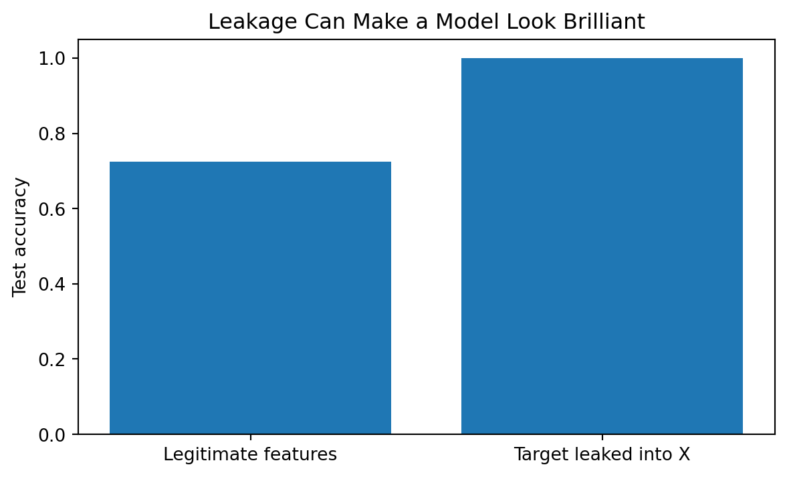

By the end of this chapter, you should be able to:
distinguish raw, analytical, training, validation, and test data;
explain why preprocessing must respect the evaluation boundary;
diagnose missingness, duplicates, invalid values, and inconsistent representations;
distinguish numerical, nominal, ordinal, datetime, text, and identifier variables;
apply scaling, imputation, and categorical encoding appropriately;
explain feature engineering as the construction of model representations;
use Pipeline and ColumnTransformer to prevent common forms of leakage;
explain why preprocessing choices should be learned from training data;
evaluate whether an engineered feature would actually exist at prediction time;
build reproducible transformations rather than manually modifying source data;
connect domain knowledge to health, education, and benchmark feature design;
audit AI-generated preprocessing code for technically subtle errors.
5.2 Why This Matters
Most machine-learning algorithms do not receive “reality.” They receive a representation of reality produced by a data pipeline.
That representation may contain missing values, inconsistent categories, measurement artifacts, duplicated records, inappropriate identifiers, post-outcome information, or transformations learned from the wrong observations.
A model can therefore fail before the algorithm itself has done anything wrong.
ImportantCentral Question
How do we transform raw data into model-ready evidence without contaminating the evaluation or distorting the meaning of the variables?
5.3 From Problem Specification to Data Pipeline
Chapter 4 defined the problem as
\[
\mathcal{P}=(U,Y,X_t,t,H,L,E,C).
\]
Chapter 5 operationalizes \(X_t\).
The critical subscript is \(t\): features must be legitimately available when the prediction is made.
Start with structure, missingness, duplicates, and summaries.
df.shape, df.dtypes
((6, 4),
age float64
program object
study_hours float64
retained int64
dtype: object)
df.isna().sum()
age 1
program 0
study_hours 1
retained 0
dtype: int64
df.duplicated().sum()
np.int64(1)
df.describe(include="all")
age
program
study_hours
retained
count
5.000000
6
5.000000
6.000000
unique
NaN
3
NaN
NaN
top
NaN
MS
NaN
NaN
freq
NaN
2
NaN
NaN
mean
41.400000
NaN
7.200000
0.666667
std
16.288032
NaN
2.280351
0.516398
min
22.000000
NaN
4.000000
0.000000
25%
35.000000
NaN
6.000000
0.250000
50%
35.000000
NaN
8.000000
1.000000
75%
51.000000
NaN
8.000000
1.000000
max
64.000000
NaN
10.000000
1.000000
The goal is not to “clean everything.” The goal is to understand which observations and variables are credible for the specified problem.
5.6 Data Quality Is Contextual
A value can be syntactically valid and substantively impossible: negative age, 25 hours of sleep per day, graduation before enrollment, an identifier treated as a continuous quantity, inconsistent laboratory units, or categories whose definitions changed across years.
Validation therefore combines computational checks with domain knowledge.
5.7 Data-Centric Machine Learning
A common reflex is
\[
\text{Disappointing performance}\rightarrow\text{try a more sophisticated algorithm}.
\]
Sometimes that is appropriate. Often it is premature.
A data-centric perspective asks whether better evidence could matter more than greater model complexity. Research on data cascades in high-stakes AI similarly shows how upstream data problems can propagate through downstream systems (Sambasivan et al. 2021). Potential improvements include better labels, measurement, population coverage, temporal alignment, category consistency, feature representation, and removal of corrupted or duplicated observations.
A useful diagnostic sequence is
\[
\text{Performance Problem}
\rightarrow
\begin{cases}
\text{inspect target and labels}\\
\text{inspect measurement}\\
\text{inspect missingness}\\
\text{inspect representation}\\
\text{inspect population coverage}\\
\text{inspect timing and leakage}\\
\text{inspect evaluation design}\\
\text{then reconsider model capacity}
\end{cases}
\]
5.7.1 Dimensions of Data Quality
Dimension
Diagnostic question
Label quality
Is the target recorded consistently and correctly?
Measurement validity
Do variables represent the intended phenomena?
Completeness
What is missing, for whom, and why?
Consistency
Are units, categories, and definitions stable?
Uniqueness
Are duplicate observations present?
Timeliness
Would the information exist at prediction time?
Coverage
Are important populations, sites, periods, or conditions underrepresented?
Provenance
Can we explain how each variable was produced?
A large dataset can still be weak for a particular problem.
5.7.2 Small Experiment: Better Model or Better Data?
Figure 5.1: When training labels are corrupted, increasing model complexity may help less than improving the training evidence.
This is a controlled illustration, not a universal law. The lesson is diagnostic: before escalating model complexity, investigate whether the bottleneck is the information supplied to the model.
NoteData Quality Sets an Information Boundary
A model cannot recover information that was never measured, repair an invalid target merely by optimizing harder, or guarantee coverage of populations absent from the data.
\[
\boxed{\text{Model quality is constrained by the information quality of the data-generating process.}}
\]
ImportantResearch Reality Check
If several algorithms perform poorly, do not immediately conclude that the phenomenon is “not predictable.” Examine target reliability, measurement, timing, missingness, coverage, label noise, feature availability, sample adequacy, and evaluation design.
Failure of tested representations and algorithms is not proof that the underlying phenomenon contains no predictable signal.
5.8 Missing Data
Missing values may arise because a variable was not measured, not applicable, refused, structurally unavailable, lost, or recorded under a special code. The missingness process matters for valid inference; missing values should therefore not be treated as a purely mechanical cleaning problem (Rubin 1976).
Before imputation, ask:
How much is missing?
For which variables?
For which observations or groups?
Why might it be missing?
Is missingness itself informative?
Would this variable be available at deployment?
5.8.1 Why dropna() Is Not a Strategy
df = df.dropna()
This can change the analytical sample and therefore the population represented by the analysis.
5.8.2 Imputation
For a numerical feature, simple median imputation can be written
Best for repeatable workflows: place learned preprocessing and modeling inside a pipeline.
WarningLeakage Can Be Quiet
The target does not need to appear explicitly in the training features for leakage to occur. Test-set information used to estimate preprocessing parameters also contaminates evaluation. Leakage can make reported performance substantially more optimistic than performance under a valid evaluation design (Kapoor and Narayanan 2023).
5.10 Train/Test Splitting
For demonstration, create a slightly larger mixed-type dataset so stratification is stable.
from sklearn.model_selection import train_test_splitX_train, X_test, y_train, y_test = train_test_split( X, y, test_size=0.25, random_state=42, stratify=y)X_train.shape, X_test.shape
((90, 3), (30, 3))
A random stratified split is pedagogically convenient here. Chapter 4 established that grouped, temporal, geographic, or external validation may be required by the actual problem.
5.11 Numerical Features
Common transformations include imputation, standardization, robust scaling, transformations, interaction terms, and substantively justified rates or ratios.
Encoding these as 0, 1, 2, 3 imposes numerical structure. That is an analytical assumption, not merely a formatting decision.
5.13 Identifiers Are Not Ordinary Features
Student IDs, patient IDs, account numbers, and institution IDs may look numeric but usually function as identifiers.
They may still be needed for grouping, joins, longitudinal linkage, split design, and auditing. The question is whether they belong in the predictive feature matrix.
5.14 Datetime Features
Timestamps may be transformed into day of week, month, elapsed time, age at event, time since prior event, or academic term.
Datetime engineering must still pass the Chapter 4 availability test.
5.15 Feature Engineering: Representation as Modeling
The flattened representation is convenient for many classical estimators, but it does not explicitly encode the two-dimensional neighborhood relationships visible in the original image.
5.16.2 Vision Leakage Can Be Subtle
Suppose several images come from the same patient, student, device, video, or acquisition session. Randomly splitting individual images can place highly related observations in both training and test sets.
The model may then appear to generalize while partly recognizing source-specific patterns.
Whenever images are naturally grouped, consider splitting by the higher-level unit:
\[
\boxed{
\text{Split by the unit that must generalize}
}
\]
Examples include patient, institution, camera, video, subject, or acquisition session.
5.16.3 Augmentation Belongs Inside the Training Process
Transformations such as flips, rotations, crops, or brightness changes can increase training diversity when substantively appropriate.
But augmentation must respect the target.
A horizontal flip may be harmless for some object-recognition problems and scientifically invalid for a task in which laterality matters.
NoteA Vision Transformation Is Also an Assumption
Every crop, resize, normalization rule, augmentation, and color transformation states what visual information the model is allowed to treat as stable.
Computer-vision preprocessing is therefore not merely image cleanup. It is part of the model’s representation of the world.
5.17 Interactions and Nonlinearity
An interaction can be written
\[
x_3=x_1x_2.
\]
Polynomial expansion may include
\[
x,\quad x^2,\quad x^3.
\]
Additional flexibility can reveal structure but also increase dimensionality and overfitting.
5.18 Outliers: Error, Rarity, or Signal?
An extreme value may be a data-entry error, unit mismatch, valid rare observation, subgroup member, or exactly the event we need to detect.
Outlier treatment should begin with interpretation, not automatic deletion.
5.19 ColumnTransformer: Different Columns, Different Transformations
In a Jupyter environment, please rerun this cell to show the HTML representation or trust the notebook. On GitHub, the HTML representation is unable to render, please try loading this page with nbviewer.org.
This becomes especially important during cross-validation because each training fold should learn its own preprocessing parameters. scikit-learn’s estimator and pipeline ecosystem supports composable preprocessing and modeling workflows (Pedregosa et al. 2011).
ImportantPipeline Principle
Anything that learns from data and affects the model should usually live inside the evaluation workflow.
from sklearn.datasets import make_classificationfrom sklearn.metrics import accuracy_scorefrom sklearn.linear_model import LogisticRegressionimport matplotlib.pyplot as pltX_syn, y_syn = make_classification( n_samples=1200, n_features=8, n_informative=4, class_sep=0.8, random_state=42)X_leaked = np.column_stack([X_syn, y_syn])def evaluate(features): Xtr, Xte, ytr, yte = train_test_split( features, y_syn, test_size=0.3, random_state=42, stratify=y_syn ) clf = LogisticRegression(max_iter=1000) clf.fit(Xtr, ytr)return accuracy_score(yte, clf.predict(Xte))scores = [evaluate(X_syn), evaluate(X_leaked)]plt.figure(figsize=(7, 4))plt.bar(["Legitimate features", "Target leaked into X"], scores)plt.ylabel("Test accuracy")plt.ylim(0, 1.05)plt.title("Leakage Can Make a Model Look Brilliant")plt.show()

Figure 5.2: A leaked feature can create spectacular but meaningless test performance.
The leaked model is not more intelligent. The experiment has been corrupted.
5.22 Three Data Tracks
5.22.1 Health Track
Ask whether measurements were available at prediction time, whether special missing codes exist, whether units are consistent, whether a derived clinical feature partly defines the target, and whether complex survey design affects the intended inference.
5.22.2 Education Track
Ask whether variables align temporally with the outcome, whether lagged features are needed, whether definitions changed across years, whether IDs are used only for linkage/grouping, and whether rates have comparable denominator reliability.
5.22.3 Open ML Benchmark Track
Benchmark data let us deliberately alter scale, inject missingness, or add irrelevant features to study preprocessing behavior under controlled conditions.
5.23 Beyond the Algorithm: Data Are Made, Not Merely Found
NoteThe Dataset Is Already an Interpretation
Before the first model is fitted, choices have already determined what was measured, who was included, how categories were defined, which instruments were used, when measurements occurred, how missingness was encoded, and which observations survived collection.
Feature engineering adds another layer.
The model does not learn directly from the world. It learns from a representation produced through measurement and transformation.
This does not make quantitative analysis arbitrary. It makes documentation, domain knowledge, validation, and humility essential.
Ask:
What had to happen for this phenomenon to become this column?
5.24 AI Pair Programmer: Audit the Preprocessing
Ask an AI assistant to preprocess a mixed-type classification dataset.
Audit whether it:
imputes before or after splitting;
scales the complete dataset;
encodes before cross-validation;
silently drops missing rows;
includes identifiers;
uses post-outcome variables;
handles unseen categories;
documents transformations;
places learned transformations inside a pipeline.
Do not judge the answer merely by whether the code runs.
5.25 Hands-On Lab: Build a Leakage-Safe Pipeline
Choose a dataset with numeric and categorical features.
document provenance and unit of analysis;
identify target and prediction time;
classify variables by analytical type;
identify IDs and leakage risks;
inspect missingness and unusual values;
split according to the Chapter 4 evaluation design;
build numeric and categorical preprocessing pipelines;
combine them with ColumnTransformer;
attach a simple estimator;
evaluate without independently preprocessing the test set;
inspect transformed feature names;
document each transformation and rationale.
identify one data-quality bottleneck that model tuning cannot directly repair;
propose a data-improvement intervention and explain how you would test whether it improves generalization.
5.25.1 Computer Vision Extension
Using sklearn.datasets.load_digits:
inspect the original image tensor and flattened feature matrix;
visualize examples from several classes;
document the unit of analysis and target;
identify an appropriate train/test split;
scale pixel features inside a leakage-safe pipeline;
fit a simple baseline classifier;
evaluate performance on unseen images;
inspect several misclassified images;
explain what information is lost or obscured when images are flattened;
describe how the evaluation design would need to change if multiple images came from the same person or acquisition session.
This is intentionally a classical computer-vision baseline. Later neural-network work can be compared against it rather than treating deep learning as the starting point.
5.26 Practitioner Track
Build robust preprocessing workflows that handle missing values, categorical variables, scaling, unknown categories, and repeated evaluation without manual intervention.
5.27 Researcher Track
Additionally justify preprocessing decisions in relation to measurement, sampling, timing, validity, reproducibility, and the scientific claim.
5.28 Research Studio: Build a Data Dictionary and Feature Ledger
Create a feature ledger containing:
Field
Description
Variable
source variable
Construct
what it represents
Unit/type
measurement scale
Availability time
when known
Missing codes
documented meanings
Transformation
proposed preprocessing
Derived feature
if applicable
Leakage risk
yes/no + rationale
Inclusion rationale
why it belongs
Provenance
authoritative source
Quality risk
plausible measurement/label/coverage problem
Quality evidence
how the risk will be assessed
Improvement action
what could improve the data rather than the model
Identify at least three candidate engineered features and explain the substantive theory behind each.
5.29 Professor’s Challenge: The Perfect Preprocessing Notebook
A team reports excellent cross-validation performance:
Critique complete-case deletion, encoding before splitting, scaling before splitting, preprocessing before cross-validation, possible IDs, feature availability, unseen categories, provenance, whether all variables should be scaled, and whether the split matches deployment.
Redesign the workflow with ColumnTransformer and Pipeline.
5.30 Knowledge Check
Why preserve raw data?
Why is dropna() not a complete strategy?
What is the evaluation boundary?
Why learn scaling parameters from training data?
How can preprocessing cause leakage?
When is one-hot encoding appropriate?
Why is an integer not necessarily quantitative?
Why exclude identifiers from the model matrix?
What is feature engineering?
Why can outlier removal destroy signal?
What does ColumnTransformer solve?
Why are pipelines important during cross-validation?
Why should engineered features pass the availability test?
What does it mean to say data are “made” rather than merely found?
What is a data-centric approach to machine learning?
Why can model complexity fail to repair a data-quality problem?
How does population coverage differ from simply having a large sample?
Why does poor performance not prove an outcome is inherently unpredictable?
5.31 Reproducibility Check
Record raw-data provenance, validation rules, exclusions, missing-value strategy, variable types, split strategy, random seed where applicable, feature lists, encoding, scaling, engineered features, fitted preprocessing objects, software dependencies, and code producing processed data.
5.32 Key Takeaways
ML algorithms learn from representations, not directly from reality.
Raw data should remain recoverable and transformations should be scripted.
Cleaning decisions require substantive reasoning.
Preprocessing learned from test data contaminates evaluation.
Missingness should be understood before imputation or deletion.
Pipeline keeps learned preprocessing inside the modeling workflow.
Leakage can make a weak model appear extraordinary.
A trustworthy feature should be meaningful, available at prediction time, reproducibly constructed, and evaluated without contamination.
Diagnose data limitations before escalating algorithmic complexity.
Label quality, measurement, timing, coverage, and provenance constrain achievable performance.
Poor performance can reflect weak evidence or representation rather than an inherently unpredictable phenomenon.
5.33 Looking Ahead
With the prediction problem defined and the data pipeline constructed, the book now moves from workflow design to model families. Chapter 6 begins supervised learning with linear regression, using a deliberately transparent model to connect features, loss, residuals, generalization, regularization, and evidence about predictive performance.
Kapoor, Sayash, and Arvind Narayanan. 2023. “Leakage and the Reproducibility Crisis in Machine-Learning-Based Science.”Patterns 4 (9): 100804. https://doi.org/10.1016/j.patter.2023.100804.
Pedregosa, Fabian, Gaël Varoquaux, Alexandre Gramfort, Vincent Michel, Bertrand Thirion, Olivier Grisel, Mathieu Blondel, et al. 2011. “Scikit-Learn: Machine Learning in Python.”Journal of Machine Learning Research 12 (85): 2825–30.
Sambasivan, Nithya, Shivani Kapania, Hannah Highfill, Diana Akrong, Praveen Paritosh, and Lora M. Aroyo. 2021. “Everyone Wants to Do the Model Work, Not the Data Work: Data Cascades in High-Stakes AI.” In Proceedings of the 2021 CHI Conference on Human Factors in Computing Systems. Association for Computing Machinery.